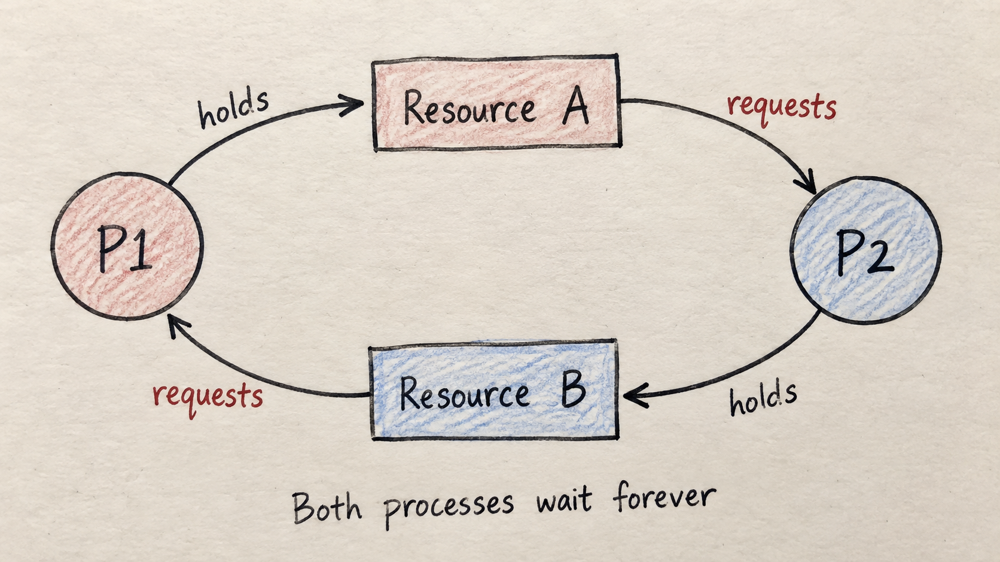
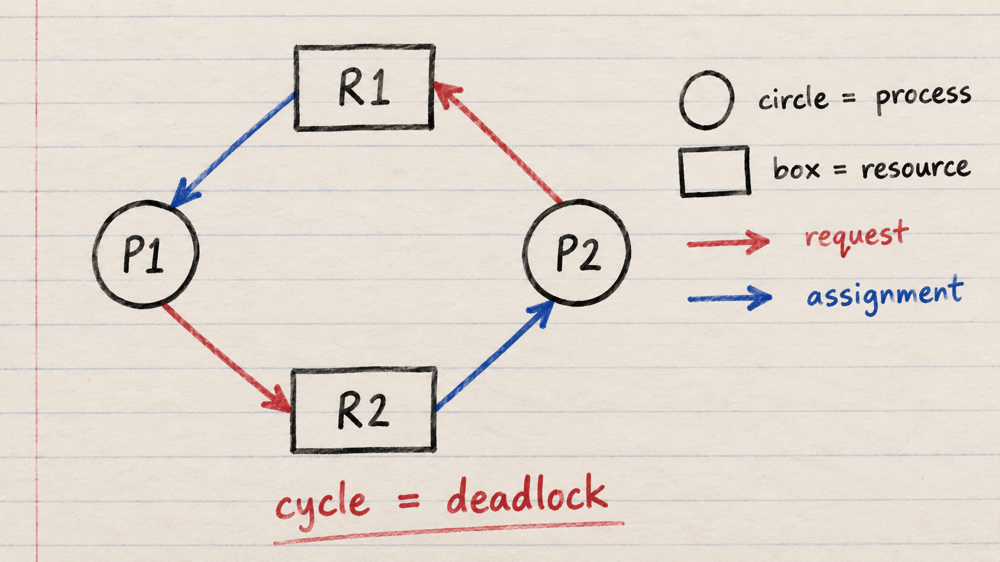
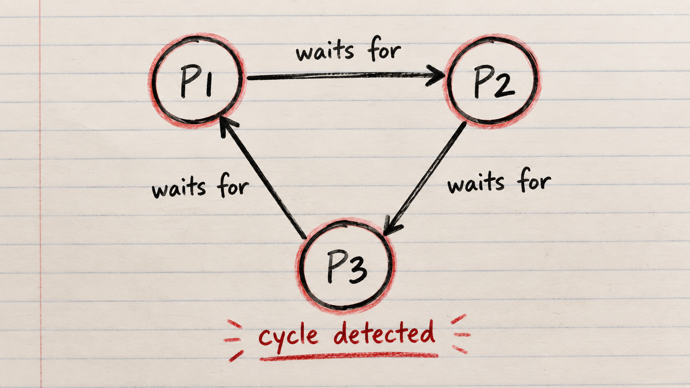

Deadlock State
A set of processes becomes permanently blocked because each process is waiting for a resource held by another.
No process can move forward unless the cycle is broken.

When processes wait for resources that can never become available
A set of processes becomes permanently blocked because each process is waiting for a resource held by another.
No process can move forward unless the cycle is broken.

Only one process can use a particular resource at a time.
A process holds resources while requesting additional ones.
A resource must be released voluntarily by its holder.
Each process waits for a resource held by the next process in a cycle.
A Resource Allocation Graph, or RAG, shows which resources processes hold and which resources they request.
A cycle signals circular waiting.
With one instance of each resource type, a cycle confirms deadlock.

Stop any one of the necessary 4 conditions from occurring.
Grant a request only when the system remains in a safe state.
Allow deadlock, detect it, then break the cycle.
Safe state: at least one completion sequence exists. An unsafe state creates risk, but does not automatically mean a deadlock already exists.
Prevent the following:
Some resources, such as printers, cannot be shared. Eliminating this condition is often impractical.
Require a process to request every needed resource before it begins, or allow requests only when it holds none.
The tradeoff is lower resource utilization.
Prevent the following:
Take a resource from one process when another process needs it, provided the resource state can be saved and restored safely.
Give resource types a fixed order and require every process to request them in increasing order.
A shared request order makes a circular chain impossible.
Each process declares its maximum possible resource demand.
The system temporarily tests a new request.
If a safe completion sequence remains, the system grants the request.
If the state would become unsafe, the request waits.
| Process | Max | Allocated | Need | ||||||
|---|---|---|---|---|---|---|---|---|---|
| A | B | C | A | B | C | A | B | C | |
| P1 | 2 | 1 | 1 | 1 | 0 | 0 | 1 | 1 | 1 |
| P2 | 1 | 2 | 1 | 0 | 1 | 1 | 1 | 1 | 0 |
| P3 | 3 | 1 | 2 | 1 | 1 | 0 | 2 | 0 | 2 |
P1 can finish because Need [1, 1, 1] is no greater than Available [1, 1, 2].
| Structure | Size | Meaning |
|---|---|---|
| Available | M | Currently available instances of each resource type |
| Max | N × M | Maximum demand of every process |
| Allocation | N × M | Resources currently assigned to every process |
| Need | N × M | Resources each process may still require |
| Request | N × M | Pending requests from all processes |

Follow the directed edges and check whether they return to the starting process.
Choose a recovery method to break the circular wait.
Resources released: none